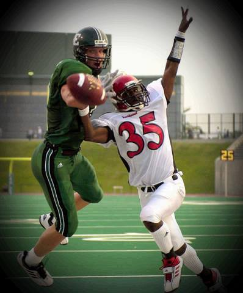

Career Stats
Tackles: 147
Interceptions: 9
Touchdowns: 2
Sacks: 6
TFL: 5
Pass Breakups: 13
St Louis' Own Demar Winston Caps a Stellar Football Career at Southeast Missouri St University

3 year starter at cornerback ...
great speed ...
good man-to-man coverage ...
2001: Starter at cornerback ... 51 tackles including 33 solo stops ... team-high four interceptions returned 57 yards ... broke up four passes ... forced two fumbles ... recovered one fumble.
2000: Fourth leading tackler on the team with 69 ... had three tackles for losses of eight yards and two sacks for losses of six yards ... broke up a team-high five passes ... had three quarterback hurries ... recovered a fumble and forced a fumble ... also had two kickoff returns for 16 yards.
1999: Part-time starter in the secondary ... recorded 27 tackles including one tackle for a two yard loss ... broke up four passes.
PREP: Gateway Tech HS ...
Son of Darryl and Deborah Winston ...
Majored in Marketing
Career Stats
Tackles: 147
Interceptions: 9
Touchdowns: 2
Sacks: 6
TFL: 5
Pass Breakups: 13